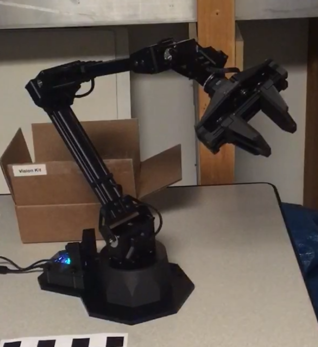
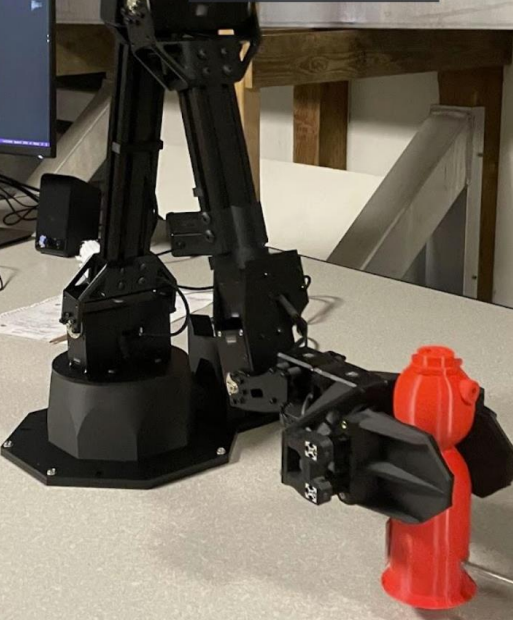
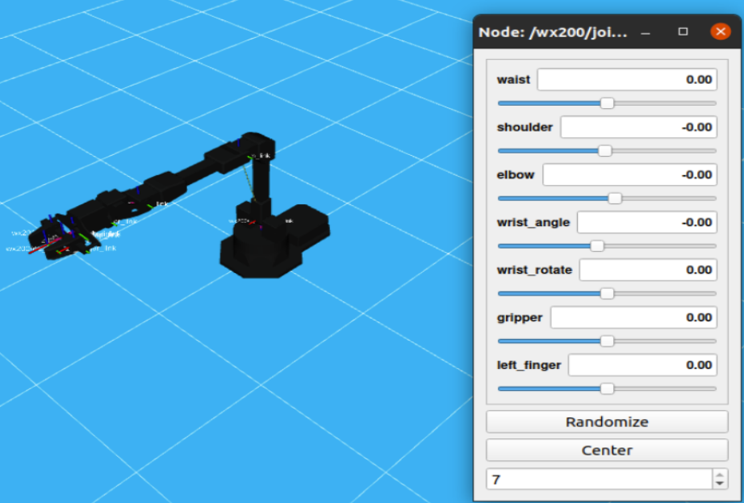
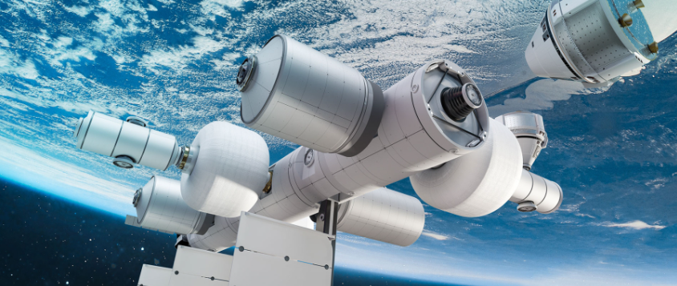

Nonlinear Dynamics and Control Lab: Blue Origin RPO

Summary:
- - C++ is used in cutting-edge technologies such as autonomous vehicles (fixed-wing aircraft, underwater gliders, space launch vehicles), robot arms, and underwater robots. It's crucial for embedded systems expertise.
- - Tools like Blender, Python, and C++ are essential for designing these systems to meet specific goals.
- - Researchers study animals like birds, bats, fish, and insects for insights into precise sensing abilities in changing environments, aiding technology advancement.
- 1. AprilTag Applications to Autonomous Spacecraft Docking: Here
- 2. Revolutionizing space rendezvous: Testing a groundbreaking precision tool for Blue Origin: Here
Testbed & Robot Operating System (ROS)
- The control system will be bench-tested using 6DOF robotic manipulator arms to carry camera-equipped spacecraft models through simulated orbital trajectories.
- ROS, or Robot Operating System, is an open-source collection of software libraries which is being used to program the robotic arms.
Background
- The goal is to use two robotic arms: one carries a camera (observer), and the other carries a spacecraft model with AprilTags attached (target). The camera's path can be controlled using feedback from the AprilTag-camera system.
- Over the past year, we've been modifying single-arm setups to work with dual arms. This includes adjusting Xacro/URDF models, launch files, and visualizing the dual-arm system in RViz.
Physical System


- Before running physical tests, planned trajectories will be demonstrated in virtual simulations. This will help prevent unwanted collisions during testing. Motion planning tools interface with the ROS simulation platform, Gazebo.
- - Blender experimentation involves utilizing the bpy (Blender Python) package.
- - A script is developed to rotate a Blender-made object and capture pictures at fixed intervals.
Simulation
Blender

Spacecraft Docking Applications
In response to the rapid growth of the spaceflight industry, the Nonlinear Dynamics and Control Laboratory, in collaboration with Blue Origin, is developing an advanced control system. This system integrates fiducial markers to enhance spacecraft docking by improving:
- - Localization, guidance, and navigation for autonomous docking
- - Efficiency in personnel transport, supply exchange, and refueling operations
- - Effectiveness in repair, maintenance, and debris removal tasks
This initiative aims to optimize spacecraft maneuvers, ensuring safer and more reliable mission profiles across various applications within the space industry.

Future Work
-
Next Steps for Robot Programming
- Development of the Gazebo model.
- Development of the inverse kinematics model (MoveIt).
- Implementation of a feedback loop into robotic controls.
-
Improving AprilTag Characterization
- To fully understand AprilTags' capabilities, we need to:
- Conduct an expanded preliminary study to determine the optimal tag size relative to distance for better performance in various missions.
- Consider the curvature of modern spacecraft fleets in our accuracy assessments.
- Gather ample data within these parameters to enhance our understanding.
- Establish guidelines for placing AprilTags on spacecraft to ensure precise motion tracking from every angle.
Past Work: Fiducial Markers
AprilTag is a type of fiducial marker, a specific collection of 2D barcodes. When placed on a known object, observation of the markers can be used to calculate relative distance and orientation of the object.
AprilTag accuracies were tested with several variables to predict spacecraft applicability:
- - Surface curvature affects the accuracy of AprilTag detection.
- - The distance from the camera impacts the precision of AprilTag recognition.
- - The size of the AprilTag influences its detectability.
- - The orientation relative to the camera affects the reliability of AprilTag readings.
- - Shadow obfuscation can degrade the performance of AprilTag detection.